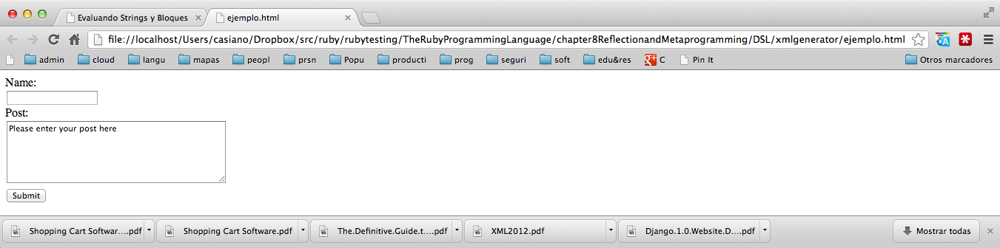

verbatim1116#
verbatim1117#
<#48101#>Figura<#48101#> 14.1:
<#48102#>Formulario generado<#48102#>

|
Este DSL permite describir una gramática XML: que tags son permitidos
y para cada tag que atributos son legales y de que tipo son.
Se usaría así:
verbatim1118#
El método 1121 construye un método de instancia
con el nombre especificado (por ejemplo, 1122) como primer
argumento en la subclase (1123 en el ejemplo).
Como segundo argumento opcional recibe un hash especificando los atributos
legales del elemento y de que tipo son (1124 por requerido, 1125 por opcional,
una String<#9311#><#9311#> como en 1126 indica valor por defecto y 1127 para atributos
cuyo valor es su propio nombre.
En el código anterior se crean métodos 1128, 1129, 1130, 1131
y 1132 en la clase 1133.
verbatim1119#
verbatim1120#